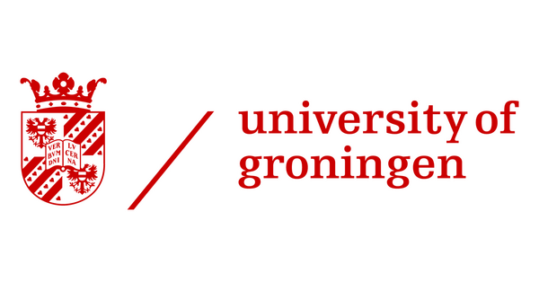
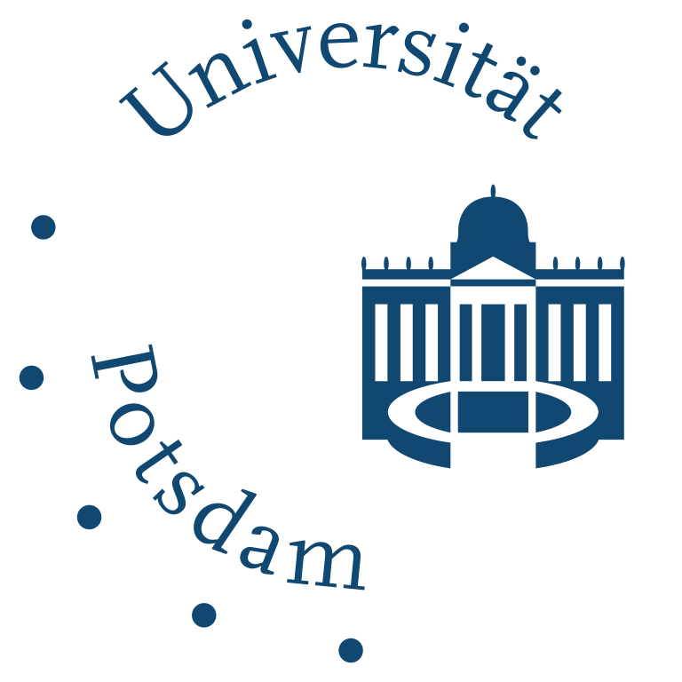
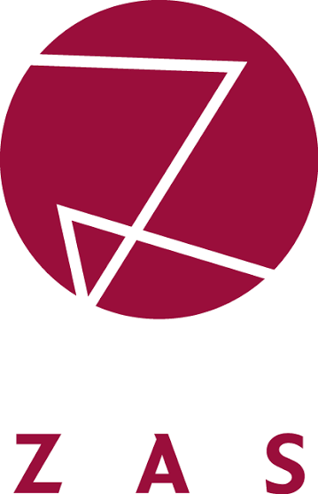
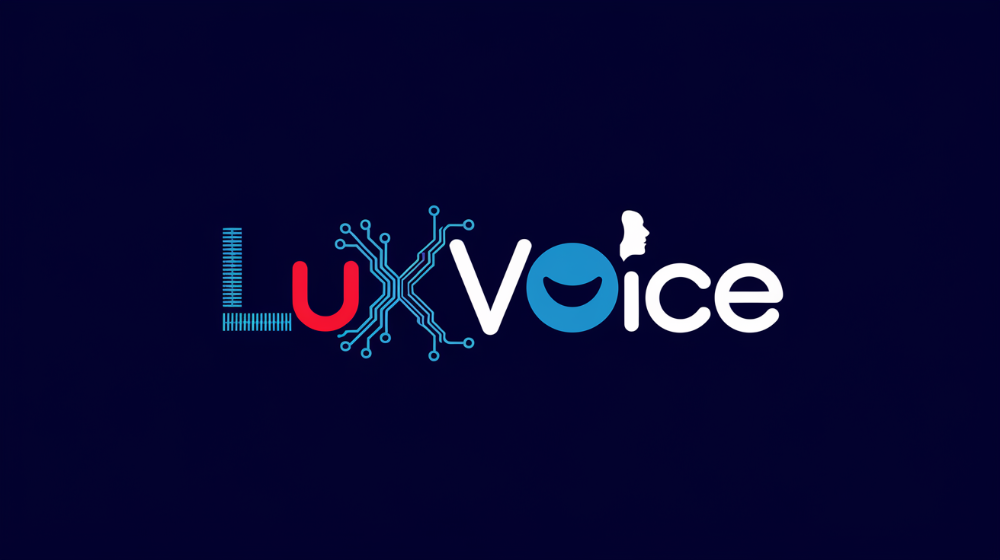

I develop intelligent systems that understand how people speak, express meaning, and communicate across languages.
My work brings together speech technology, natural language processing, multimodal AI, and human-centered computing, with a particular focus on Luxembourgish and other languages underrepresented in today’s AI systems.
A voice carries identity, emotion, rhythm, culture, and belonging. My research explores how AI can understand this complexity without reducing human communication to words or benchmark scores alone.
The future of AI should not speak with only one voice.
Research areas
What I work on
01
AI for languages technology overlooks
Speech synthesis, recognition, multilingual language models, question answering, code-switching, resource creation, and cross-language evaluation for Luxembourgish and other low-resource settings.
Prosody, voice quality, facial behavior, gesture, emotion, timing, and context—combined into multimodal systems whose feedback remains understandable and useful.
Research grounded in language, people, and public value.
Dr. Nina Hosseini-Kivanani is a computer scientist working across speech and language technology, multimodal communication, and human-centered computing. She holds a PhD in Computer Science from the University of Luxembourg and leads research and development activities in Luxembourgish speech technology through LuxVoice.
Alongside research, she is committed to education, mentorship, scientific outreach, and expanding access to AI for young people and underrepresented groups.
People should not have to change their language, voice, or identity to fit the limitations of technology. I work toward intelligent systems that are more multilingual, expressive, interpretable, and inclusive.
My work explores how artificial intelligence can understand human communication in all its linguistic, vocal, emotional, and multimodal complexity.
My perspective
Human communication is never limited to words.
We communicate through voice, timing, rhythm, pronunciation, gesture, facial expression, cultural knowledge, and context. Meaning emerges from the interaction of these signals rather than from any single channel.
My research investigates how intelligent systems can learn from this complexity while remaining useful, interpretable, and accountable to the people who use them. Multilingual and low-resource environments are not marginal technical problems; they are essential settings for developing more inclusive and capable AI.
My journey
An interdisciplinary path from language to AI.
I studied experimental and clinical linguistics, speech processing, and language and communication technologies before completing my PhD in Computer Science at the University of Luxembourg. This background shaped a research approach that connects speech, language, vision, health, and human behavior.
My earlier work examined how speech, handwriting, drawing, and machine learning could support the study of Alzheimer’s and Parkinson’s disease. That work introduced a question that still guides my research:
When an AI system makes a prediction, can people understand and trust the reasoning behind it?
Predictive performance alone is not sufficient in sensitive domains. Systems must be interpretable, carefully evaluated, and designed to support human expertise rather than obscure or replace it.
Why multilingual AI matters
Smaller-language communities often receive weaker speech recognition, less natural synthetic voices, fewer language tools, and limited access to new AI applications. This affects digital participation, cultural representation, accessibility, education, and public services.
Supporting Luxembourgish through synthesis, recognition, multilingual modeling, corpus development, and human evaluation also means supporting the people and identities represented by the language.
Building AI for people
AI should be introduced only where it provides genuine value. My work emphasizes human-centered evaluation, interpretable outputs, collaboration with domain experts, responsible use of human data, cultural diversity, and preservation of human judgment.
I see AI as a collaborative technological layer: one that extends human capabilities without making human knowledge, responsibility, and experience invisible.
Research beyond the laboratory
I enjoy developing research from concept and data collection through modeling, evaluation, publication, and public communication. My collaborations connect researchers, engineers, linguists, educators, media professionals, schools, institutions, and industry partners.
Education and inclusion
My teaching emphasizes experimentation, critical thinking, and meaningful real-world problems. Through VoiceTech4Teens, young people learn that they can understand, question, improve, and shape AI—not merely use it.
Beyond research
Curiosity beyond the laboratory.
Outside formal research, I enjoy cooking, discovering food cultures, walking, hiking, music, and conversations that bring together people from different backgrounds. Cooking reflects qualities I value in research: experimentation, precision, adaptation, and creativity. Walking and hiking create space for observation, reflection, and new ideas.
My vision
AI should learn to understand human communication in all its richness.
People should not have to adapt their language, voice, culture, or identity to fit the limitations of technology.
Researching how AI can listen, understand, and respond more humanly.
My research combines speech technology, natural language processing, multimodal machine learning, and human-centered evaluation in environments where language diversity, limited data, human interpretation, and real-world complexity matter.
Research philosophy
AI is both a computational and human problem.
A capable model is only one stage of a useful system. A complete research process must also ask what the system learns from, which languages and populations are represented, how uncertainty is communicated, whether users can interpret outputs, and whether the technology supports human agency.
How can we build effective speech and language technologies for languages with limited data, complex multilingual use, and strong regional variation?
Focus
Luxembourgish and other low-resource languages: data scarcity, dialect variation, code-switching, multilingual transfer, speech generation, recognition, language modeling, and evaluation.
Current topics
Expressive and emotional TTS
Luxembourgish ASR
Spoken question answering
Corpus development
Code-switching and lexical borrowing
Multilingual reasoning with LLMs
Methods
Transfer learning and efficient adaptation
Multilingual pretraining
Speech encoders and LLM backends
Data augmentation and synthetic speech
Listening studies and robust statistics
Objective: Design methods, resources, and evaluation protocols that reflect the linguistic characteristics and communication practices of the communities they serve.
02
Research direction
Multimodal and human-centered AI
Research question
How can AI understand communication signals beyond text while producing outputs that remain transparent and useful?
Focus
Computational representations of voice, prosody, facial behavior, gesture, movement, emotion, and context.
Current topics
Prosodic and gesture analysis
Multimodal presentation assessment
Emotion and expressive speech
Multimodal idiom understanding
Transparent formative feedback
Methods
Audio and visual feature extraction
Temporal modeling and multimodal fusion
Interpretable machine learning
Human annotation
User-centered evaluation
Objective: Help people understand what a system observed, why an output was produced, and how that information can be used constructively.
03
Research direction
AI for health and human assessment
Research question
How can machine learning support human assessment in sensitive domains without replacing professional expertise?
Focus
Data-efficient, interpretable methods using handwriting, drawing, speech, and phonological information for neurocognitive and speech-related assessment.
Topics
Clock, house, and pentagon drawing analysis
Online and offline handwriting
Small clinical datasets
Cross-language speech intelligibility
Parkinson’s phonological analysis
Methods
Computer vision and signal processing
Trajectory analysis
Transfer learning
Synthetic-data generation
Cross-validation and uncertainty analysis
Objective: Assist experts by identifying patterns and organizing evidence while keeping limitations, assumptions, and uncertainty visible.
Cross-cutting themes
Themes across my research
Low-resource learning
Effective models when annotated data are limited, uneven, or expensive.
Interpretability
Outputs and limitations people can understand.
Multilingualism
Evaluation across languages rather than assumed transfer.
Human evaluation
Listening studies, expert assessment, and qualitative analysis.
Responsible deployment
Privacy, representation, accountability, and oversight.
Collaborative network
Research is a collaborative practice.
My work is supported by competitive national and European funding and long-term collaboration with academic, industrial, and public-sector partners.



Let’s build language technology that reflects real human diversity.
I welcome collaboration in multilingual speech, low-resource NLP, expressive speech, multimodal communication, interpretable AI, knowledge graphs, healthcare, and education.
From research questions to datasets, systems, and public impact.
My projects connect scientific research with practical implementation across multilingual speech, language resources, multimodal assessment, clinical AI, international collaboration, and public engagement.

Project 01 · Luxembourgish speech technology
LuxVoice
Role: Researcher and project leadPartners: RTL Lëtzebuerg & University of LuxembourgSupport: FNR
LuxVoice develops high-quality speech technology for Luxembourgish, focusing on text-to-speech synthesis, expressive voice generation, speech-data creation, human evaluation, and robust low-resource modeling.
It addresses limited training data, multilingual influence, dialect variation, and code-switching through multilingual transfer, resource development, adaptation, and native-speaker evaluation.
Main objectives
Natural Luxembourgish TTS
Expressive and emotional speech
High-quality speech resources
Multilingual transfer
Listening studies and automatic evaluation
Why it matters
Voice interfaces, accessibility tools, media systems, and educational applications depend on speech technology. LuxVoice helps ensure Luxembourgish can participate in that future.
LuxNLP encompasses multiple research efforts developing datasets, models, and evaluation frameworks for Luxembourgish natural language processing, including expressive speech synthesis (LuxEmo), spoken question answering (LuxSQA), and lexical borrowing analysis (LuxBorrow).
Girls in multilingual speech and language AI lab days
Role: Creator and Principal InvestigatorSupport: FNRLocation: LIST BelvauxAudience: Girls aged 14–18
A free four-day program where beginners explore how speech becomes data, test multilingual AI, learn about chatbots and synthetic voices, build a team prototype, and present it in a final demonstration.
The goal is not only to teach young people how to use technology, but to show that they can question, create, and shape it.
Neurocognitive screening and biomedical language technology
This research develops interpretable machine-learning methods for health-related assessment and biomedical knowledge extraction — from handwriting and drawing signals for neurocognitive screening to biomedical term extraction and ontology-enhanced annotation.
PhD thesis
Machine-learning methods for neurocognitive screening using handwriting and drawing University of Luxembourg, 2025 — Accepted without revisions; nominated for an Excellent Thesis Award
Principle
Clinical AI must remain decision support. Predictions belong alongside professional expertise, data quality, uncertainty, and the limitations of the experimental setting.
Handwriting & drawing for neurocognitive screening
Automatic Data Augmentation of CDT, HDT, and PDT Images for Cognitive Screening (2026)
Alzheimer's Disease Screening with Limited and Noisy On-line Pentagon Drawings (2025)
Screening of Alzheimer's Disease and MCI through Integrated On-Line and Off-Line House Drawing Tests (2024)
Ink of Insight: Data Augmentation for Dementia Screening through Handwriting Analysis (2024)
Blueprint of Tomorrow: Contrasting Off-Line and On-Line Drawing Tasks for Alzheimer's Disease Screening (2024)
Predicting Alzheimer's Disease and MCI with Off-Line and On-Line House Drawing Tests (2024)
This international COST Action research examines multilingual entity detection, disambiguation, Wikidata linking, NIL detection, triple generation, validation, and knowledge-graph enrichment for local and multilingual information.
KGELL · Working Group 1 Vice-Chair Knowledge Graphs in the Era of Large Language Models (COST Action CA24121) — multilingual entity disambiguation, linking, triple generation, validation, and graph enrichment for low-resource languages (2022 – Present)
Research visits & collaboration
COST STSM · Istanbul Technical University Research visit on knowledge graphs for low-resource languages, including multilingual entity linking, local entities, NIL detection, triple generation, and graph enrichment
Hackathons & hands-on events
Hackathon on Metadata and Provenance for Knowledge Graphs — University of Oviedo, Spain; collaborative work on metadata, provenance, and knowledge-graph quality
PIAS: Transparent Multimodal Assessment of Presentation Delivery
Nina Hosseini-Kivanani, Nafiseh Taghva, Oliver Niebuhr
Educational Data Mining (EDM), 2026 — Accepted
Does Math Reason the Same Across Languages? Prompting Trade-offs in Multilingual Math Support
Nina Hosseini-Kivanani, Louis Colbus
2026
TermHunter: Neural Biomedical Term Extraction and Ontology-Enhanced Definition Generation with Structured Prompting
Nina Hosseini-Kivanani and collaborators
DETECH 2026 — Accepted
A Parallel Cross-Lingual Benchmark for Multimodal Idiomaticity Understanding
UniDive community collaboration
LREC 2026
Automatic Data Augmentation of CDT, HDT, and PDT Images for Cognitive Screening
Nina Hosseini-Kivanani, Inês Cardoso Oliveira, Elena Salobrar-García, Luis A. Leiva
Lecture Notes in Artificial Intelligence, Springer (2026) — Accepted
@article{hosseini2026cdt,
title={Automatic Data Augmentation of CDT, HDT, and PDT Images for Cognitive Screening},
author={Hosseini-Kivanani, Nina and Oliveira, In{\^e}s Cardoso and Salobrar-Garc{\'\i}a, Elena and Leiva, Luis A.},
journal={Lecture Notes in Artificial Intelligence},
publisher={Springer},
year={2026}
}
PolyFrame at MWE-2026 AdMIRe 2: When Words Are Not Enough: Multimodal Idiom Disambiguation
@article{hosseini2026polyframe,
title={PolyFrame at MWE-2026 AdMIRe 2: When Words Are Not Enough: Multimodal Idiom Disambiguation},
author={Hosseini-Kivanani, Nina},
journal={arXiv preprint arXiv:2602.18652},
year={2026}
}
LuxBorrow: From Pompier to Pompjee, Tracing Borrowing in Luxembourgish
Nina Hosseini-Kivanani, Fred Philippy
Proceedings of the Language Resources and Evaluation Conference (LREC-COLING 2026)
@inproceedings{hosseini2026luxborrow,
title={LuxBorrow: From Pompier to Pompjee, Tracing Borrowing in Luxembourgish},
author={Hosseini-Kivanani, Nina and Philippy, Fred},
booktitle={Proceedings of the Language Resources and Evaluation Conference (LREC-COLING 2026)},
year={2026}
}
2025
A Hybrid Framework for Neologism Validation using LLMs and Lexical Knowledge Graphs
Nina Hosseini-Kivanani
1st International Workshop on Terminological Neologism Management (NeoTerm 2025), June 18, 2025, Thessaloniki, Greece
@inproceedings{hosseini2025speaker,
title={Speaker Verification Enhancement via Speaking Rate Dynamics in Persian Speechprints},
author={Hosseini-Kivanani, Nina and Asadi, Homa and Schommer, Christoph},
booktitle={Proceedings of the 14th International Conference on Pattern Recognition Applications and Methods (ICPRAM)},
volume={1},
pages={665--672},
year={2025},
doi={10.5220/0013189100003905}
}
Efficient Automatic Data Augmentation of CDT Images to Support Cognitive Screening
Nina Hosseini-Kivanani, Inês Cardoso Oliveira, Sena Kilinç, Luis A. Leiva
Proceedings of the 17th International Conference on Agents and Artificial Intelligence (ICAART 2025), Vol. 3, pp. 600-607, 2025
@inproceedings{hosseini2025efficient,
title={Efficient Automatic Data Augmentation of CDT Images to Support Cognitive Screening},
author={Hosseini-Kivanani, Nina and Oliveira, In{\^e}s Cardoso and Kilin{\c{c}}, Sena and Leiva, Luis A.},
booktitle={Proceedings of the 17th International Conference on Agents and Artificial Intelligence (ICAART 2025)},
volume={3},
pages={600--607},
year={2025}
}
Voices of Luxembourg: Tackling Dialect Diversity in a Low-Resource Setting
Nina Hosseini-Kivanani, Christoph Schommer, Peter Gilles
Proceedings of the Third Workshop on Resources and Representations for Under-Resourced Languages and Domains (RESOURCEFUL-2025), 2025
@inproceedings{hosseini2025voices,
title={Voices of Luxembourg: Tackling Dialect Diversity in a Low-Resource Setting},
author={Hosseini-Kivanani, N. and Schommer, C. and Gilles, P.},
booktitle={Proceedings of the Third Workshop on Resources and Representations for Under-Resourced Languages and Domains (RESOURCEFUL-2025)},
pages={143--152},
year={2025},
month={March}
}
The Prosody of Cheering in Sports Events: The Case of Long-Distance Running
Marzena Żygis, Sarah Wesolek, Nina Hosseini-Kivanani, Manfred Krifka
Phonetica 82.6 (2025) pp. 489–524. De Gruyter, 2025
@article{zygis2025prosody,
title={The prosody of cheering in sports events: the case of long-distance running},
author={Żygis, Marzena and Wesolek, Sarah and Hosseini-Kivanani, Nina and Krifka, Manfred},
journal={Phonetica},
volume={82},
number={6},
pages={489--524},
publisher={De Gruyter},
year={2025}
}
Alzheimer's Disease Screening with Limited and Noisy On-line Pentagon Drawings
Nina Hosseini-Kivanani, Elena Salobrar-García, Moises Diaz, Miguel A. Ferrer, Luis A. Leiva
Proceedings of the International Graphonomics Society (IGS), 2025
@inproceedings{hosseini2025pentagon,
title={Alzheimer's Disease Screening with Limited and Noisy On-line Pentagon Drawings},
author={Hosseini-Kivanani, Nina and Salobrar-Garc{\'\i}a, Elena and Diaz, Moises and Ferrer, Miguel A. and Leiva, Luis A.},
booktitle={Proceedings of the International Graphonomics Society (IGS)},
year={2025}
}
2024
Screening of Alzheimer's Disease and Mild Cognitive Impairment through Integrated On-Line and Off-Line House Drawing Tests
N. Hosseini-Kivanani, E. Salobrar-García, L. Elvira-Hurtado, M. Salas, C. Schommer, L.A. Leiva
Proceedings of the International Conferences on Applied Computing and WWW/Internet 2024
@inproceedings{hosseini2024screening,
title={SCREENING OF ALZHEIMER'S DISEASE AND MILD COGNITIVE IMPAIRMENT THROUGH INTEGRATED ON-LINE AND OFF-LINE HOUSE DRAWING TESTS},
author={Hosseini-Kivanani, N and Salobrar-Garc{\'\i}a, E and Elvira-Hurtado, L and Salas, M and Schommer, C and Leiva, LA},
booktitle={Proceedings of the International Conferences on Applied Computing and WWW/Internet 2024},
pages={203--209},
year={2024}
}
Ink of Insight: Data Augmentation for Dementia Screening through Handwriting Analysis
Nina Hosseini-Kivanani, Elena Salobrar-García, Lorena Elvira-Hurtado, Inés López-Cuenca, Rosa de Hoz, José M Ramírez, Pedro Gil, Mario Salas-Carrillo, Christoph Schommer, Luis A. Leiva
Proceedings of the 2024 8th International Conference on Medical and Health Informatics, 2024
@inproceedings{hosseini2024ink,
title={Ink of insight: Data augmentation for dementia screening through handwriting analysis},
author={Hosseini-Kivanani, Nina and Salobrar-Garc{\'\i}a, Elena and Elvira-Hurtado, Lorena and L{\'o}pez-Cuenca, In{\'e}s and de Hoz, Rosa and Ram{\'\i}rez, Jos{\'e} M and Gil, Pedro and Salas-Carrillo, Mario and Schommer, Christoph and Leiva, Luis A},
booktitle={Proceedings of the 2024 8th International Conference on Medical and Health Informatics},
pages={224--233},
year={2024}
}
Blueprint of Tomorrow: Contrasting Off-Line and On-Line Drawing Tasks for Alzheimer's Disease Screening
Nina Hosseini-Kivanani, Elena Salobrar-García, Lorena Elvira-Hurtado, Mario Salas, Christoph Schommer, Luis A. Leiva
International Conference on Intelligent Data Engineering and Automated Learning (IDEAL), 2024
@inproceedings{hosseini2024blueprint,
title={Blueprint of Tomorrow: Contrasting Off-Line and On-Line Drawing Tasks for Alzheimer's Disease Screening},
author={Hosseini-Kivanani, Nina and Salobrar-García, Elena and Elvira-Hurtado, Lorena and Salas, Mario and Schommer, Christoph and Leiva, Luis A},
booktitle={International Conference on Intelligent Data Engineering and Automated Learning},
pages={422--433},
year={2024},
organization={Springer}
}
Predicting Alzheimer's Disease and Mild Cognitive Impairment with Off-Line and On-Line House Drawing Tests
Nina Hosseini-Kivanani, Elena Salobrar-García, Lorena Elvira-Hurtado, Mario Salas, Christoph Schommer, Luis A. Leiva
2024 IEEE 20th International Conference on e-Science (e-Science), 2024
@inproceedings{hosseini2024predicting,
title={Predicting Alzheimer's disease and mild cognitive impairment with off-line and on-line house drawing tests},
author={Hosseini-Kivanani, Nina and Salobrar-García, Elena and Elvira-Hurtado, Lorena and Salas, Mario and Schommer, Christoph and Leiva, Luis A},
booktitle={2024 IEEE 20th International Conference on e-Science (e-Science)},
pages={1--10},
year={2024},
organization={IEEE}
}
Mapping Sentiments: A Journey into Low-Resource Luxembourgish Analysis
Nina Hosseini-Kivanani, Julien Kuhn, Christoph Schommer
ECAI 2024 Workshop LUHME, 2024
@inproceedings{hosseini2024sentiments,
title={Mapping Sentiments: A Journey into Low-Resource Luxembourgish Analysis},
author={Hosseini-Kivanani, Nina and Kuhn, Julien and Schommer, Christoph},
booktitle={ECAI 2024 Workshop LUHME},
year={2024}
}
2023
ASRLux: Automatic Speech Recognition for the Low-Resource Language Luxembourgish
Peter Gilles, Léopold Hillah, Nina Hosseini-Kivanani
ICPhS 2023, Prague, 2023
@inproceedings{gilles2023asrlux,
title={ASRLux: Automatic speech recognition for the low-resource language Luxembourgish},
author={Gilles, Peter and Hillah, L{\'e}opold and Hosseini-Kivanani, Nina},
booktitle={ICPhS 2023},
address={Prague},
year={2023}
}
Better Together: Combining Different Handwriting Input Sources Improves Dementia Screening
Nina Hosseini-Kivanani, Elena Salobrar-García, Lorena Elvira-Hurtado, Inés López-Cuenca, Rosa De Hoz, José M Ramírez, Pedro Gil, Mario Salas, Christoph Schommer, Luis A. Leiva
2023 IEEE 19th International Conference on e-Science (e-Science), 2023
@inproceedings{hosseini2023better,
title={Better together: Combining different handwriting input sources improves dementia screening},
author={Hosseini-Kivanani, Nina and Salobrar-Garc{\'\i}a, Elena and Elvira-Hurtado, Lorena and L{\'o}pez-Cuenca, In{\'e}s and De Hoz, Rosa and Ram{\'\i}rez, Jos{\'e} M and Gil, Pedro and Salas, Mario and Schommer, Christoph and Leiva, Luis A},
booktitle={2023 IEEE 19th International Conference on e-Science (e-Science)},
pages={1--7},
year={2023},
organization={IEEE}
}
The Magic Number: Impact of Sample Size for Dementia Screening using Transfer Learning and Data Augmentation of Clock Drawing Test Images
Nina Hosseini-Kivanani, Christoph Schommer, Luis A. Leiva
2023 IEEE International Conference on E-health Networking, Application & Services (Healthcom), 2023
@inproceedings{hosseini2023magic,
title={The magic number: impact of sample size for dementia screening using transfer learning and data augmentation of clock drawing test images},
author={Hosseini-Kivanani, Nina and Schommer, Christoph and Leiva, Luis A},
booktitle={2023 IEEE International Conference on E-health Networking, Application \& Services (Healthcom)},
pages={101--106},
year={2023},
organization={IEEE}
}
User Requirement Analysis for a Real-Time NLP-Based Open Information Retrieval Meeting Assistant
European Conference on Information Retrieval, 2023
@inproceedings{alcaraz2023user,
title={User requirement analysis for a real-time nlp-based open information retrieval meeting assistant},
author={Alcaraz, Beno{\^\i}t and Hosseini-Kivanani, Nina and Najjar, Amro and Bongard-Blanchy, Kerstin},
booktitle={European Conference on Information Retrieval},
pages={18--32},
year={2023},
organization={Springer}
}
LUX-ASR: Building an ASR System for the Luxembourgish Language
Peter Gilles, Nina Hosseini-Kivanani, Léopold Edem Ayité Hillah
2022 IEEE Spoken Language Technology Workshop (SLT), 2023
@inproceedings{gilles2023lux,
title={LUX-ASR: Building an ASR system for the Luxembourgish language},
author={Gilles, Peter and HOSSEINI KIVANANI, Nina and Hillah, L{\'e}opold Edem Ayit{\'e}},
booktitle={2022 IEEE Spoken Language Technology Workshop (SLT) SLT 2022},
year={2023}
}
Exploring the Use of Phonological Features for Parkinson's Disease Detection
Nina Hosseini-Kivanani, Juan Camilo Vásquez-Correa, Christoph Schommer, Elmar Nöth
20th International Congress of the Phonetic Sciences (ICPhS 2023), 2023
@inproceedings{hosseini2023exploring,
title={Exploring the use of phonological features for Parkinson's disease detection},
author={HOSSEINI KIVANANI, Nina and V{\'a}squez-Correa, Juan Camilo and Schommer, Christoph and N{\"o}th, Elmar},
booktitle={20th International Congress of the Phonetic Sciences (ICPhS 2023)},
year={2023}
}
2022
The Prosody of Cheering in Sport Events
Marzena Zygis, Sarah Wesolek, Nina Hosseini Kivanani, Manfred Krifka
Proc. Interspeech 2022, South Korea (2022) pp. 5283–5287
@inproceedings{zygis2022prosody,
title={The Prosody of Cheering in Sport Events},
author={Zygis, Marzena and Wesolek, Sarah and Hosseini Kivanani, Nina and Krifka, Manfred},
booktitle={Proc. Interspeech 2022},
pages={5283--5287},
address={South Korea},
year={2022}
}
IRRMA: An Image Recommender Robot Meeting Assistant
International Conference on Practical Applications of Agents and Multi-Agent Systems, 2022
@inproceedings{alcaraz2022irrma,
title={IRRMA: An Image Recommender Robot Meeting Assistant},
author={Alcaraz, Beno{\^\i}t and Hosseini-Kivanani, Nina and Najjar, Amro},
booktitle={International Conference on Practical Applications of Agents and Multi-Agent Systems},
pages={449--453},
year={2022},
organization={Springer}
}
2021
Experiments of ASR-based Mispronunciation Detection for Children and Adult English Learners
Nina Hosseini Kivanani, Roberto Gretter, Marco Matassoni, Giuseppe Daniele Falavigna
BNAIC/BeneLearn (2021) pp. 203–216. BnL, 2021
@inproceedings{hosseini2021asr,
title={Experiments of ASR-based mispronunciation detection for children and adult English learners},
author={Hosseini Kivanani, Nina and Gretter, Roberto and Matassoni, Marco and Falavigna, Giuseppe Daniele},
booktitle={BNAIC/BeneLearn},
pages={203--216},
year={2021}
}
2019
Phonetic Accommodation in the Fundamental Frequency of Korean-English Bilinguals and English Monolinguals
Nina Hosseini-Kivanani, Stephen Tobin, Adamantios I. Gafos
Proceedings of the International Congress of Phonetic Sciences (ICPhS), Melbourne, Australia, 2019
@inproceedings{hosseini2019phonetic,
title={Phonetic accommodation in the fundamental frequency of Korean-English bilinguals and English monolinguals},
author={Hosseini-Kivanani, N. and Tobin, S. and Gafos, A.},
booktitle={Proceedings of the International Congress of Phonetic Sciences},
year={2019},
address={Melbourne, Australia}
}
Automated Cross-language Intelligibility Analysis of Parkinson's Disease Patients Using Speech Recognition Technologies
Nina Hosseini-Kivanani, Juan Camilo Vásquez-Correa, Manfred Stede, Elmar Nöth
Proceedings of the 57th Annual Meeting of the Association for Computational Linguistics (ACL), 2019
@article{hosseini2019automated,
title={Automated Cross-language Intelligibility Analysis of Parkinson's Disease Patients Using Speech Recognition Technologies},
author={Hosseini-Kivanani, Nina and Vásquez-Correa, Juan Camilo and Stede, Manfred and Nöth, Elmar},
journal={ACL 2019},
pages={74},
year={2019}
}
Research has greater value when it creates connections.
My academic work extends beyond publications through research leadership, teaching, mentoring, scientific outreach, international collaboration, conference organization, and public communication.
Leadership & International Collaboration
I contribute to European and international networks focused on multilingual technologies, language resources, knowledge graphs, speech, responsible AI, and interdisciplinary collaboration.
KGELL · Working Group 1 Vice-Chair
Multilingual entity disambiguation, linking, triple generation, validation, and graph enrichment for low-resource languages.
Panels, school outreach, media communication, public events, and discussions on Luxembourgish language technology, responsible AI, and digital inclusion.
Talks, Panels & Media
Panelist — AI Café 2025: Luxembourg's AI Strategy: Accelerating Digital Sovereignty 2030?
Panel
Cercle Cité, Luxembourg City
2025 | Luxembourg
Participated as a panelist discussing Luxembourg's national AI strategy and digital sovereignty in the context of low-resource language technology and responsible AI deployment.
Featured in Press — Chambre des Députés & University of Luxembourg: LuxASR Collaboration
Media
Chambre des Députés, Luxembourg
2024 | Luxembourg
Featured in press coverage of the LuxASR collaboration between the University of Luxembourg and the Chambre des Députés for speech recognition of parliamentary proceedings.
Silvana Belegu, Omar Quardighi, Vladimir Blizniukov — research interns 2022–2023
Trainer — 2nd UniDive Training School, Yerevan
Large Language Models for Low-Resourced Languages · January 2026 · Yerevan State University, Armenia
Delivered training on SpeechLLMs in low-resource settings. Topics: tokenization, phoneme alignment, prompt engineering, corpus augmentation for Luxembourgish.
Worked on TTS for low-resource languages (Maltese and Luxembourgish), including data augmentation using KNN-VC.
Research Visit — University of Genova
Genova, Italy | Jun 2023 – Jul 2023
Developed self-supervised learning pipelines for medical AI, from dataset curation to pretraining and downstream fine-tuning.
Research Assistant — ZAS Berlin
Berlin, Germany | Jan 2020 – Mar 2022
Automated phonetic analyses with PRAAT scripts and studied whispered versus normal speech through acoustic modeling.
Education
PhD in Computer Science
University of Luxembourg, FSTM | Jan 2021 – Apr 2025 | Luxembourg
Thesis: machine-learning methods for neurocognitive screening using handwriting and drawing. Accepted without revisions and nominated for an Excellent Thesis Award.
Supervisors: Prof. Luis A. Leiva and Prof. Christoph Schommer
MSc in International Experimental and Clinical Linguistics (IECL)
University of Potsdam | Apr 2017 – Jan 2021 | Germany
Thesis: Automated Intelligibility and Phonological Analysis in Parkinson's Disease Patients
Awarded DAAD Grant
MSc Erasmus Mundus — Language and Communication Technologies (LCT)
Double-degree program | Sep 2017 – Mar 2020 | Netherlands & Italy
Thesis: A deep learning approach to spoken proficiency scoring for non-native speakers
Awarded Erasmus Mundus Scholarship
Awards & Grants
Excellent Thesis Award Nomination — PhD in Computer Science, University of Luxembourg
2025
Best Oral Presentation — "Ink of Insight", ICMHI 2024
2024 · Japan
3rd Place — Digital Medical Devices Competition
2024 · Luxembourg / Barcelona
Travel Grant — Biomedical Linked Annotation Hackathon 9
2025 · Japan
STSM Grant — Machine Learning Genoa Center (MaLGa Lab)
2023 · Italy
DAAD Grant — Six-Month Master's Thesis Grant
2020 · Germany
Travel Grant — Lisbon Machine Learning School (LxMLS 2020)
2020 · Portugal
Travel Grant — AI Summer School PAISS
2019 · France
Erasmus Mundus Scholarship — MSc in Language & Communication Technologies
2017–2019 · Netherlands & Italy
Selected Grants & Fellowships
FNR Industrial Fellowship
LuxVoice — Multilingual speech technology for Luxembourgish
FNR PSP-Classic Grant
VoiceTech4Teens — AI education and multilingual speech technology outreach
DDSA Fellowship
University of Southern Denmark
COST STSM
Istanbul Technical University — Knowledge graphs for low-resource languages
ENEOLI Dissemination Grant
European Network of e-Lexicography
Biomedical Linked Annotation Hackathon Travel Grant
BLAH7, Tokyo, Japan
Machine Learning Genoa Center STSM
Research visit for multimodal learning
DAAD Master's Thesis Grant
German Academic Exchange Service
Erasmus Mundus Scholarship
European Master's program in Language and Communication Technologies
LxMLS & PAISS Travel Grants
Lisbon Machine Learning School and Artificial Intelligence Summer School
Languages & interdisciplinary background
Research across disciplines and borders.
My work has involved multilingual research environments across Luxembourg, Germany, Italy, the Netherlands, Spain, Armenia, Türkiye, Japan, and other international settings. My training connects computer science, AI, computational, experimental and clinical linguistics, speech processing, multimodal machine learning, human-computer interaction, and responsible AI.
Research publications, project developments, events, training, and outreach.
Jul2026
Registration open for VoiceTech4Teens 2026
Registration is open for a free program introducing girls aged 14–18 in Luxembourg to multilingual AI, speech technology, chatbots, and creative prototyping across four Saturday lab days at LIST Belvaux.
Two contributions involving Luxembourgish speech and language technology have been accepted, including LuxEmo, an expressive TTS corpus and evaluation framework.
Completed a research visit on knowledge graphs for low-resource languages, addressing multilingual entity linking, local entities, NIL detection, triple generation, and graph enrichment.
May2026
Contributions presented at LREC 2026
Contributed to research on Luxembourgish lexical borrowing, multilingual idiomaticity, and language resources.
The work combines interpretable prosodic and gesture-based features to support transparent formative feedback on oral presentation delivery.
2026DETECH
TermHunter accepted at DETECH 2026
TermHunter combines neural biomedical term extraction, ontology information, structured prompting, and definition generation.
Jan2026
Trainer at 2nd UniDive Training School, Yerevan
Delivered a training session on SpeechLLMs in low-resource settings at the 2nd UniDive Training School in Yerevan, Armenia. Topics included tokenization, prompt engineering, and corpus augmentation for Luxembourgish.
Jan2026
Paper Accepted — Springer Lecture Notes in Artificial Intelligence (2026)
"Automatic Data Augmentation of CDT, HDT, and PDT Images for Cognitive Screening" accepted for publication in Springer's Lecture Notes in Artificial Intelligence.
Sep2025
Research Visit at FBK Trento — TTS for Low-Resource Languages
Visited the SpeechTEK group at Fondazione Bruno Kessler (FBK), Italy, working on TTS systems for low-resource languages (Maltese, Luxembourgish) with data augmentation via KNN-VC.
Apr2025
Started the LuxVoice research position
Joined RTL Lëtzebuerg and the University of Luxembourg to lead research on Luxembourgish speech synthesis and expressive voice technology through LuxVoice.
Apr2025
Doctoral thesis nominated for an Excellent Thesis Award
The PhD thesis in Computer Science was accepted without revisions and nominated for an Excellent Thesis Award at the University of Luxembourg.
Nov2024
Best Oral Presentation Award at ICMHI 2024
Received the Best Oral Presentation award for "Ink of Insight: Data Augmentation for Dementia Screening through Deep Learning" at the 8th International Conference on Medical and Health Informatics, Japan.
Nov2024
Paper Published at IDEAL 2024
"Blueprint of Tomorrow: Contrasting Off-Line and On-Line Drawing Tasks for Alzheimer's Disease Screening" published at the International Conference on Intelligent Data Engineering and Automated Learning.
Sep2024
Paper Published at IEEE e-Science 2024
"Predicting Alzheimer's Disease and Mild Cognitive Impairment with Off-Line and On-Line House Drawing Tests" published at the IEEE International Conference on e-Science, Osaka, Japan.
Contact
Let’s connect.
I welcome conversations about research collaboration, multilingual technology, invited talks, training, student supervision, scientific outreach, and responsible AI.
Collaboration areas
Topics I would be glad to discuss
Luxembourgish speech & language technologyLow-resource TTS & ASRExpressive speechMultilingual NLPSpeech & LLMsMultimodal communicationInterpretable AIKnowledge graphsAI educationResponsible clinical AI
For collaboration requests: please briefly describe the topic, organisations involved, expected contribution, timeline, and relevant funding or project context.
Typical response time: 2-5 business days.
The most interesting AI questions begin with people.
If you are working on multilingual technology, speech, communication, education, or responsible AI, I would be glad to hear from you.